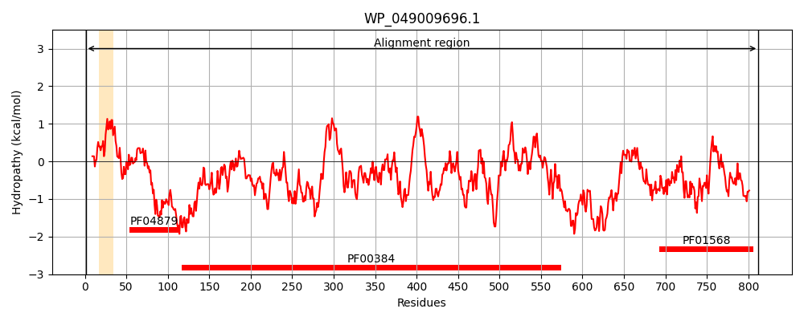
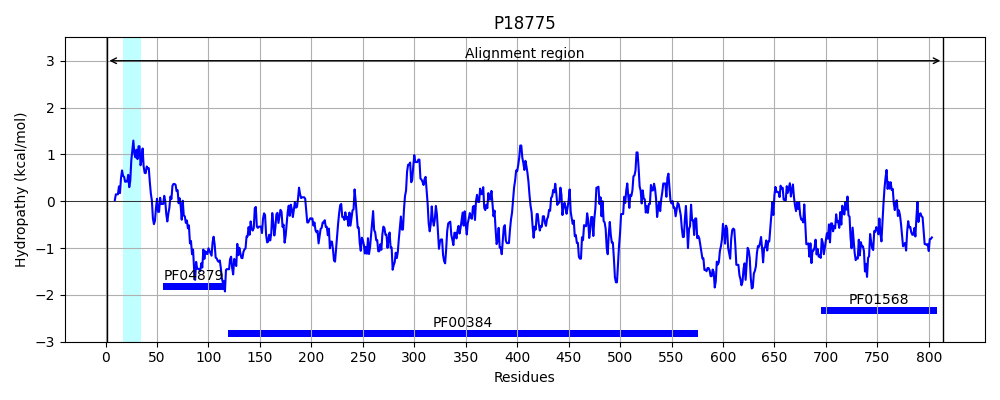
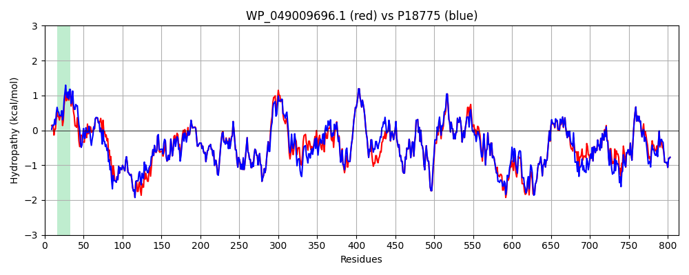

Hit Accession: P18775
Hit TCID: 5.A.3.3.2
Hit Description: gnl|BL_ORD_ID|9290 gnl|TC-DB|P18775|5.A.3.3.2 Anaerobic dimethyl sulfoxide reductase chain A precursor (EC 1.8.99.-) (DMSO reductase) - Escherichia coli.
Mach Len: 814
e:0.000000
Query TMS Count : 1
Hit TMS Count: 1
TMS-Overlap Score: 0.900000
Predicted Substrates:CHEBI:10545;electron
BLAST Alignment:
Score: 3979 , Bit scores: 1537 bits, E-value: 0.0e+00, Alignment length: 814, Percentage identity: 90
Query: 1 MKIKAPDALLAAEVSRRGLMKTTAIGGLALASNALTLPFTRLAHAADT--PAPANEKVVWSACTVNCGSRCPLRMHVVDGAIKYVETDNTGDDNYDGLHQVRACLRGRSMRRRVYNPDRLKYPMKRVGKRGEGKFEQISWEEAFDTIASNMQRLIKEYGNESIYLNYGTGTLGGTLTRSWPPGKTLIARLMNCCGGYLNHYGDYSSAQIAEGLNYTYGGWADGNSPSDIENSQLVVLFGNNPGETRMSGGGVTYYLEQARQKSNARMIIIDPRYTDTGAGREDEWIPIRPGTDAALVSGLAWVMITENLVDQPFLDKYCVGYDEKTLPAGAPANGHYKAYILGQGTDGIAKTPEWASTITGIPRERIVKLAREIATAKPAYISQGWGPQRHANGEIATRAISMLAILTGNVGINGGNSGAREGSYSLPFERMPTLENPVQTSISMFMWTDAIERGPEMTALRDGVRGKDKLDVPIKMIWNYAGNCLINQHSEINRTHEILQDDKKCEMIVVIDCHMTSSAKYADILLPDCTASEQMDFALDASCGNMSYVIFADQAIKPRFECKTIYEMTTELAKRLGVEQQFTEGRTQEGWMRHLYEQSQKAIPDLPDFDTFRQQGIYKQRDPQGHHVAYKAFREDPQANPLTTPSGKIEIYSQALAKIAATWELPEGDVIDPLPIYTPGFENYNDPLTAKYPLQLTGFHYKSRVHSTYGNVDVLKAACRQEMWINPIDAKQRGIANGDRIRIFNDRGEVHIEAKVTPRMMPGVVALGEGAWYNPDASRVDQAGSINVLTTQRPSPLAKGNPSHTNLVQVEKL 812
MK K PDA+LAAEVSRRGL+KTTAIGGLA+AS+ALTLPF+R+AHA D+ P ++EKV+WSACTVNCGSRCPLRMHVVDG IKYVETDNTGDDNYDGLHQVRACLRGRSMRRRVYNPDRLKYPMKRVG RGEGKFE+ISWEEA+D IA+NMQRLIKEYGNESIYLNYGTGTLGGT+TRSWPPG TL+ARLMNCCGGYLNHYGDYSSAQIAEGLNYTYGGWADGNSPSDIENS+LVVLFGNNPGETRMSGGGVTYYLEQARQKSNARMIIIDPRYTDTGAGREDEWIPIRPGTDAALV+GLA+VMITENLVDQ FLDKYCVGYDEKTLPA AP NGHYKAYILG+G DG+AKTPEWAS ITG+P ++I+KLAREI + KPA+ISQGWGPQRHANGEIATRAISMLAILTGNVGINGGNSGAREGSYSLPF RMPTLENP+QTSISMFMWTDAIERGPEMTALRDGVRGKDKLDVPIKMIWNYAGNCLINQHSEINRTHEILQDDKKCE+IVVIDCHMTSSAKYADILLPDCTASEQMDFALDASCGNMSYVIF DQ IKPRFECKTIYEMT+ELAKRLGVEQQFTEGRTQE WMRHLY QS++AIP+LP F+ FR+QGI+K+RDPQGHHVAYKAFREDPQANPLTTPSGKIEIYSQALA IAATWELPEGDVIDPLPIYTPGFE+Y DPL +YPLQLTGFHYKSRVHSTYGNVDVLKAACRQEMWINP+DA++RGI NGD++RIFNDRGEVHIEAKVTPRMMPGVVALGEGAWY+PDA RVD+ G INVLTTQRPSPLAKGNPSHTNLVQVEK+
Sbjct: 1 MKTKIPDAVLAAEVSRRGLVKTTAIGGLAMASSALTLPFSRIAHAVDSAIPTKSDEKVIWSACTVNCGSRCPLRMHVVDGEIKYVETDNTGDDNYDGLHQVRACLRGRSMRRRVYNPDRLKYPMKRVGARGEGKFERISWEEAYDIIATNMQRLIKEYGNESIYLNYGTGTLGGTMTRSWPPGNTLVARLMNCCGGYLNHYGDYSSAQIAEGLNYTYGGWADGNSPSDIENSKLVVLFGNNPGETRMSGGGVTYYLEQARQKSNARMIIIDPRYTDTGAGREDEWIPIRPGTDAALVNGLAYVMITENLVDQAFLDKYCVGYDEKTLPASAPKNGHYKAYILGEGPDGVAKTPEWASQITGVPADKIIKLAREIGSTKPAFISQGWGPQRHANGEIATRAISMLAILTGNVGINGGNSGAREGSYSLPFVRMPTLENPIQTSISMFMWTDAIERGPEMTALRDGVRGKDKLDVPIKMIWNYAGNCLINQHSEINRTHEILQDDKKCELIVVIDCHMTSSAKYADILLPDCTASEQMDFALDASCGNMSYVIFNDQVIKPRFECKTIYEMTSELAKRLGVEQQFTEGRTQEEWMRHLYAQSREAIPELPTFEEFRKQGIFKKRDPQGHHVAYKAFREDPQANPLTTPSGKIEIYSQALADIAATWELPEGDVIDPLPIYTPGFESYQDPLNKQYPLQLTGFHYKSRVHSTYGNVDVLKAACRQEMWINPLDAQKRGIHNGDKVRIFNDRGEVHIEAKVTPRMMPGVVALGEGAWYDPDAKRVDKGGCINVLTTQRPSPLAKGNPSHTNLVQVEKV 814 | Protein Hydropathy Plots: |
|---|
|  |  |
Pairwise Alignment-Hydropathy Plot:
|
|---|
|  |